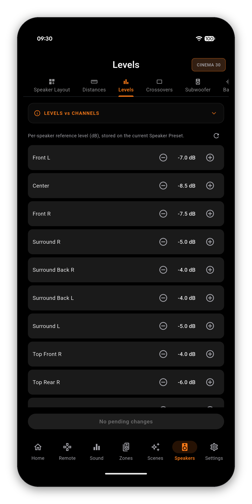
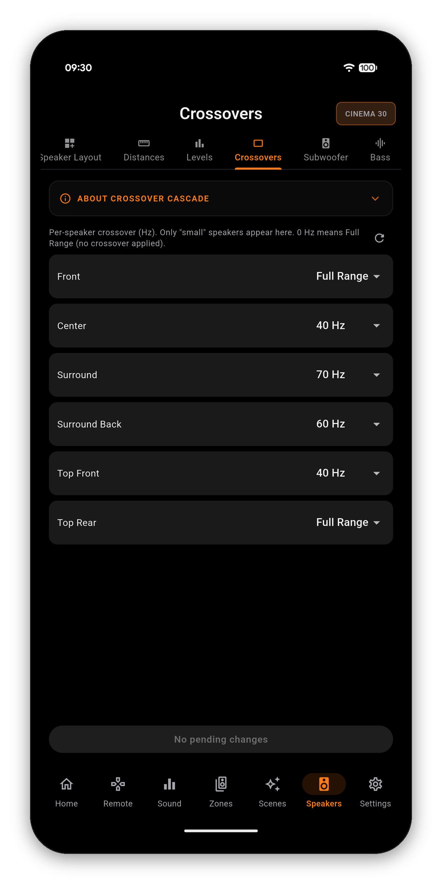
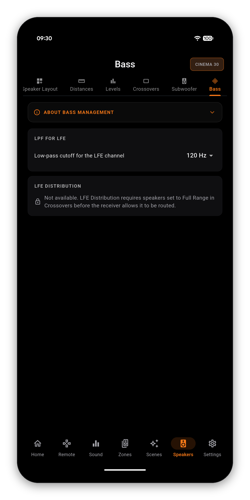
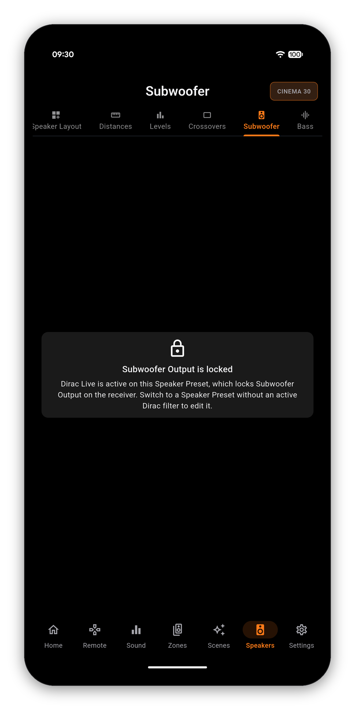
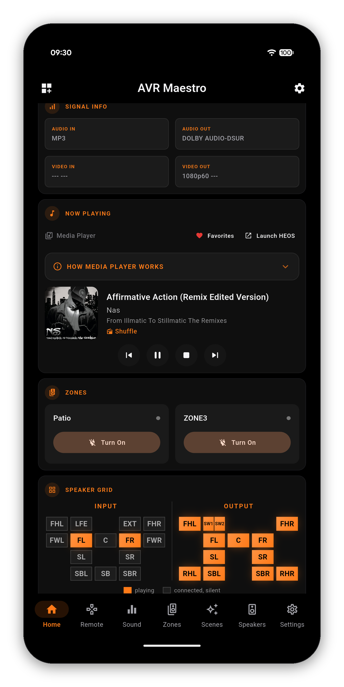
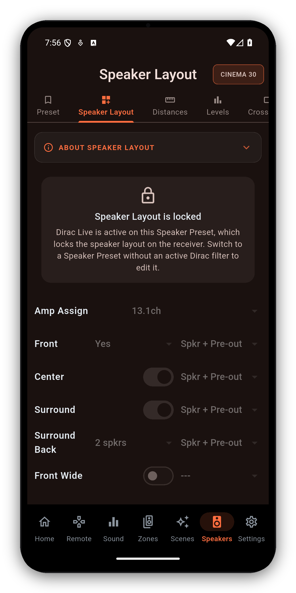

Speaker presets, layout, distances, levels, crossovers, subwoofer and bass management: the full setup suite, read live from your Denon or Marantz receiver, with each screen following the active Speaker Preset.







Open the Speakers tab at the bottom of the screen. The pages run across the top in this order; tap a name or swipe left and right to move between them.
Some older receivers (the Marantz SR7015 family, for example) use an earlier version of the setup menu. AVR Maestro recognises it from the receiver's own menu and adapts the pages:

The Speaker Grid shows what the incoming signal carries on the left and what your receiver is actually driving on the right. A stereo track shows two input channels beside every output the upmix is feeding, so you can see the upmix doing its work.
The pages above are fully editable on a standard Speaker Preset. But when a Dirac Live filter is active on a preset, Dirac owns the layout, distances, crossovers, subwoofer output and bass management, so instead of letting you make changes the receiver would silently ignore, AVR Maestro shows a clear lock and tells you why. Switch to a non-Dirac preset to edit them.

Getting started · Manage receivers · Navigating the app · Search · Home Screen · Volume Controls · Remote · Zones · Now Playing & HEOS · Radio (FM/AM) · Scenes · Sound · Graphic EQ · Why a control is locked · Settings · Widgets · Custom Icons · On-Screen Display · Languages · The Assistant · Home Automation · Home Assistant dashboard · Backup & Restore · Glossary
One-time purchase, no ads, no subscriptions. Connect in under a minute.